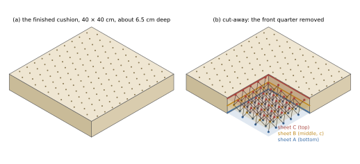
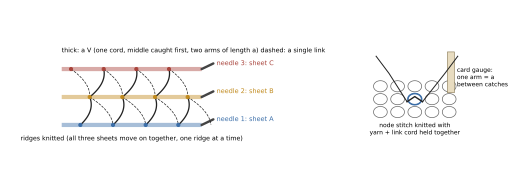
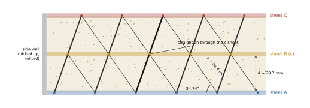
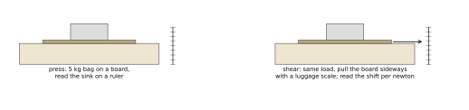

One square cushion, for sitting on and for the head, knitted by hand as one continuous three-sheet HexOct
DICTO proposed the Knitted HexOct (#83): one continuous multi-layer knitted fabric whose knitted sheets are close-packed layers and whose linking
yarns join each node to the 3 nodes of the next sheet, at 54.74°, with length a, holding the sheets √(2/3) a apart. DICTO chose the object
to be made from it: one square cushion that serves both as a seat cushion and as a pillow. This plan states what will be made, how it is knitted as one
piece, how the geometry is kept, what it costs, and how the knitter can check it against #83. Every number below comes from scripts/plan.py
(checks in data/check.out).
| Finished size | 40 × 40 cm, about 6.5 cm deep (sheet mid-planes 2 × 29.7 mm apart, one sheet thickness, a little bulge of the fill) |
|---|---|
| HexOct layers | 3 knitted sheets A, B, C (2 gaps of links); 126, 126 and 136 nodes; 721 links (355 + 366) |
| Lattice | node spacing a = 36.4 mm (8 stitches), sheet spacing d = √(2/3) a = 29.7 mm, links of length a at 54.74° |
| Sequence | A-B-C: the middle sheet is c, every link runs straight on through it (343 of 343 link pairs through B checked) |
| Faces | both faces plain garter, showing the nodes as small dimples in a triangular lattice; turned over the stack is C-B-A, still c, so both faces are alike |
Why three sheets. Three is the smallest stack with a sheet that has a type (c or h). We ran the block tests of #83 part 2 (idealised rods, links only, rigid joints) on three- and four-sheet stacks. Compression is the same in every case (14.865 × 10−3 Es). Free transverse shear is 0.193 in A-B-C and 3.708 in A-B-A: the c stack is 19.2 times softer sideways. Four sheets give less contrast (A-B-C-A against A-B-A-B: 7.5 times), because an h stack of four sheets keeps one net turn. Sheets as stiff as the links reduce the contrast to 7 %. Three sheets also give the depth closest to 5 cm at a hand-knittable scale; a 5 cm cushion would need a ≈ 29 mm (fingering yarn, 8 stitches), with about 224 nodes per sheet and about 1.7 times the work.
Why c. What the sitter feels, from #83 part 2: the sink under weight is the same for c and h, because compression loads every link alike. What changes is the sideways give: the c cushion lets its top move a little with the body when the sitter shifts or the head turns, instead of the skin rubbing on the surface; the h cushion holds the top steadier. For a cushion that is also a pillow we pick the give, so c. This choice is a reading of model results; the trial pair (§5) shows whether the real cushion feels the difference before the large piece is begun.

| Technique | What it gives | For this cushion |
|---|---|---|
| Double knitting (two layers on one needle, joined at chosen stitches); triple knitting (three layers, published hand patterns exist [1]) | layers that touch: no gap between them | links cannot have length a; not usable for the links (#83 part 1) |
| Tubular knitting | two layers joined at their edges; the cells are prisms | no tetrahedra or octahedra; used only for the side walls (§5) |
| Spacer-fabric principle by hand, sheets knitted in step (recommended) | a spacer machine catches a spacer yarn alternately in two faces knitted at the same time [2, 3]; by hand, three sheets grow together and each link cord is knitted into a node of one sheet and, a measured length a later, into a node of the next | continuous: every link is knitted in at both ends while the sheets are knitted, nothing is sewn; practical for 3 sheets; untried |
| #83 part 1 method: i-cords knitted out of the lower sheet, upper end sewn | exact links, but separate cords | upper ends are sewn, so not one continuous piece; 721 i-cords would take well over 100 hours |
| Hand-operated double-bed machine (domestic machine with ribber) | two faces knitted at once and tied, gap of a few millimetres | cannot form 32 mm links; no machine found that knits three or more spaced faces (#83 part 1); research on knitted spacers treats them as a machine-only structure [3] |
How practical. The in-step method is plain garter knitting plus one extra action at each node; the difficulty is handling three needles and the open cords at once, mostly at the start. It is our judgement, not yet tested, that it works for three sheets, is still workable for four, and becomes impractical beyond about four (weight on the needles, many open cords). If the trial shows that even three sheets cannot be managed, the honest fall-back is the #83 part 1 method, which is not one continuous piece; there is no machine route for the links.

The links set the geometry. #83 part 1 proves that when the sheets are pushed apart and every link is taut and of length a, the sheets sit exactly √(2/3) a apart and exactly over their places. So the knitter has to get three things right: equal link lengths, the right nodes, and something that pushes the sheets apart. The rounding of the node rows in §2 is then taken up by the links.
Fill pushes, cords pull. Each gap is filled firmly with carded wool, so that every link is taut when nobody sits on the cushion. The fill carries the weight; the links carry pull only (a cord cannot push). A head (about 1 kPa) puts 1.15 N on the area of one node, sitting (about 6 kPa) 6.9 N; even if the links alone held that, each would carry 2.8 N, far below the strength of a 1 mm polyester cord. Under a sitter the fill is squeezed and the links slacken; when the load is gone the fill pushes the sheets back and the links return the exact geometry.
Lengths. Non-stretch link cord (1 mm waxed polyester), every arm measured on the same card gauge under the same light pull: equal lengths matter more than the exact value. Triangle of nodes. 8 stitches by 7 ridges gives the row spacing 1.0 % too large at square gauge (31.8 mm against 31.5 mm). Garter stretches crosswise; the side walls and the cover hold the outline at 40 × 40 cm. Cover. A boxed cover of 40 × 40 × 6.5 cm holds the outer sheets flat at their size and the depth at its value, and the fill presses out against it.
What is not known. #83 part 2 modelled rods that push and pull, with stiff joints. Here cords only pull and the fill pushes. Whether the c/h shear difference survives this change is open; the trial pair answers it before the cushion is knitted.

| Item | Amount |
|---|---|
| DK mercerised cotton (sheets 3 × 155 m, side walls 2 × 46 m, at 1 cm per stitch) | about 560 m: 6 balls of 100 m / 50 g, buy 7 |
| Link cord, 1 mm waxed polyester (721 links of 36 mm + 25 mm per end for catch and knot, +10 %) | about 56 m, buy 70 m |
| Carded wool fill for 9.5 L of gaps | about 400–500 g (fixed on the trial) |
| Three 3.5 mm circular needles (60–80 cm) and a fourth for the joins; 2.5 mm crochet hook; card gauge; waste yarn; tapestry needle | — |
| Cover: cotton cloth and a 40 cm zip | about 0.5 m |
| Work | Hours |
|---|---|
| Swatch and gauge | 2 |
| Trial pair, c and h (3 sheets of 4 × 4 nodes each) | 12–16 |
| Sheets and side walls, 55 600 stitches (37 h at 25 stitches a minute, plus a quarter for working in step) | about 46 |
| Cord work: 493 pieces, 1214 catches (30 s each) | about 14 |
| Filling, closing, cover, tests | about 6 |
| Cushion (without the trial) | about 65 |
Difficulty: the knitting is plain garter; the counting of node rows and the gauge for each arm need steady attention. Suited to an experienced knitter.
Edges. Each gap gets its own side wall: pick up stitches along the four edges of the lower sheet (the provisional cast-on gives live stitches on one side), knit a garter band in the round to height d (a short tube), and join it to the upper sheet's edge with a three-needle bind-off, which is knitting, not sewing. Gap 1 first: three sides closed, fill packed in through the fourth, then closed; then gap 2 the same way. Closure. The knitted HexOct is closed for good; the cover has a zip on one side so that it can be taken off and washed. If the links slacken over the years, the last wall of each gap can be opened and fill added. Use. Both faces are the same; the cushion can be sat on or slept on either way up.
Check against #83 (the knitter can do all of this).

Order of work. Swatch and gauge → trial pair T-c and T-h → press and shear tests → DICTO confirms the sequence → full pattern → cushion → tests.
Sources. #83 HexOct: Knitting Crystals, v4, DICTO DOI: 10.5281/zenodo.23848271 (front, part 1, part 2), and its studies
2026-11-02-knitted-hexoct, 2026-11-02-hexoct-knit-mechanics (block tests rerun here for 3 and 4 sheets, data/out_*.json) and 2026-11-02-knitted-octet.
[1] N. Stine, "Arrrgyle" (triple-knitted cowl), Ravelry pattern; search result only. [2] US 6779369, weft-knitted spacer fabrics, and the double-needle-bar
Raschel notes cited in the knitted-octet note; summaries only. [3] Spacer-fabric research paper, par.nsf.gov/servlets/purl/10227085 (filler yarn caught by
tuck loops; multilayer spacers a machine-only capability); search summary only. Hand techniques (double, tubular knitting, three-needle bind-off, provisional
cast-on) are standard; no source checked.